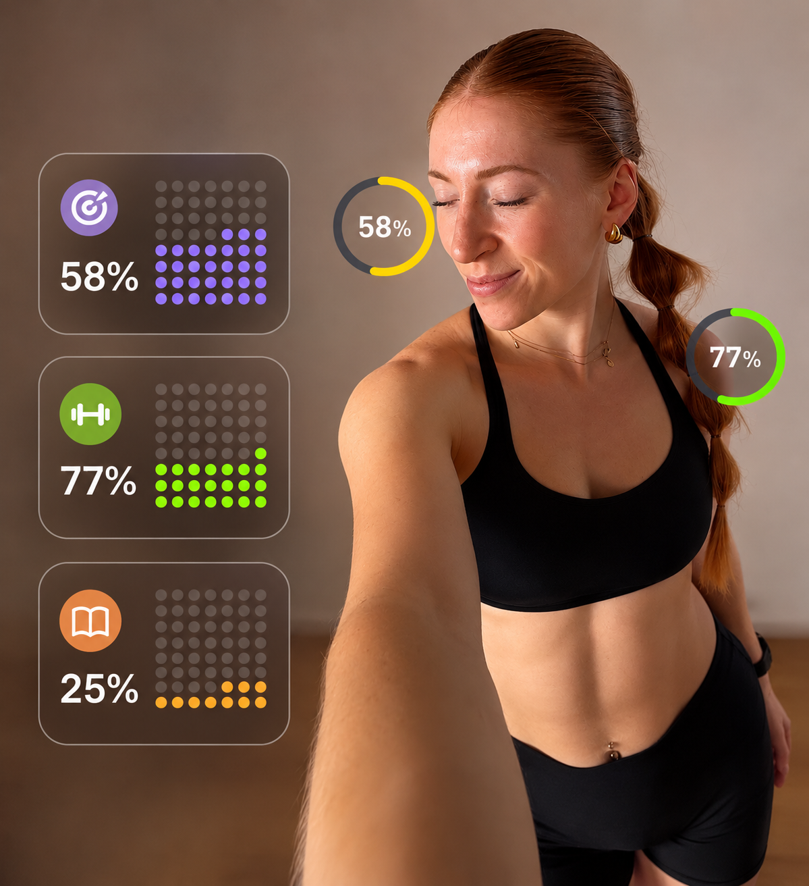
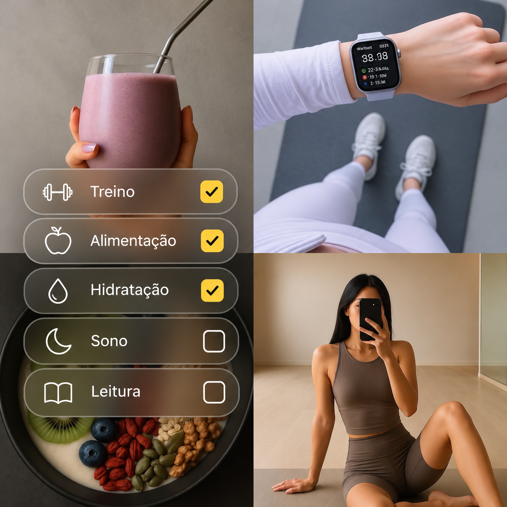
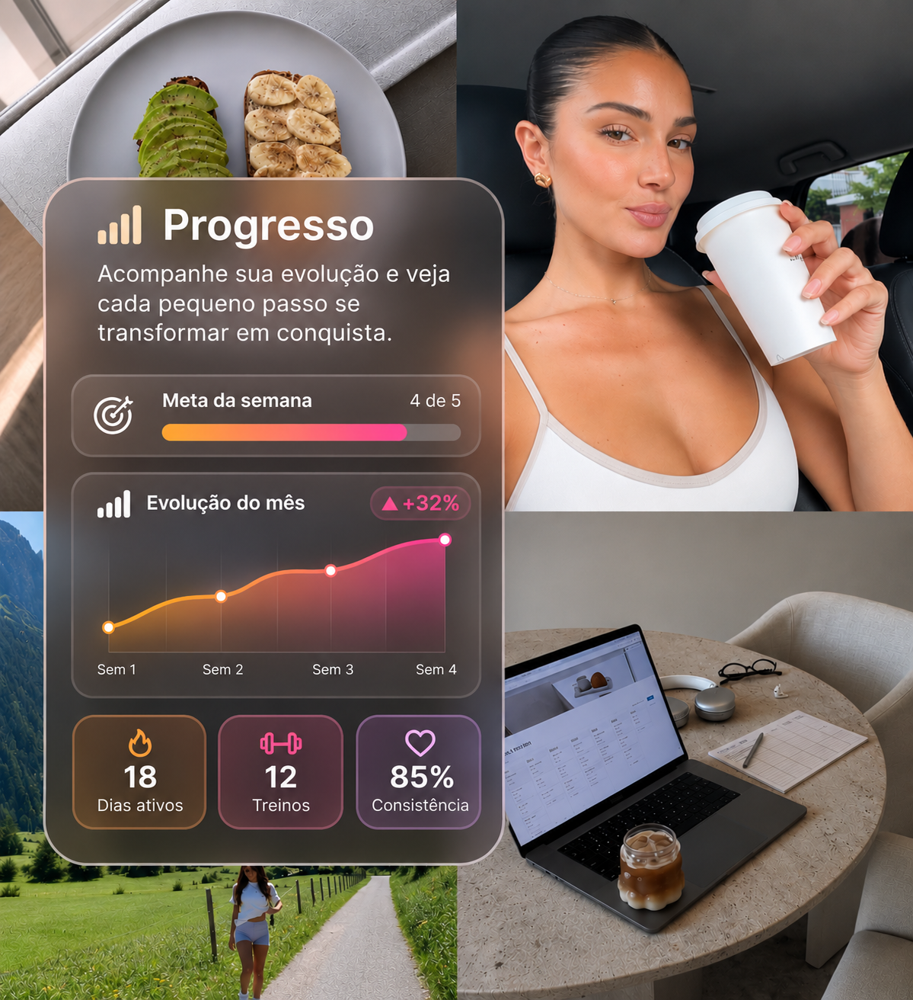
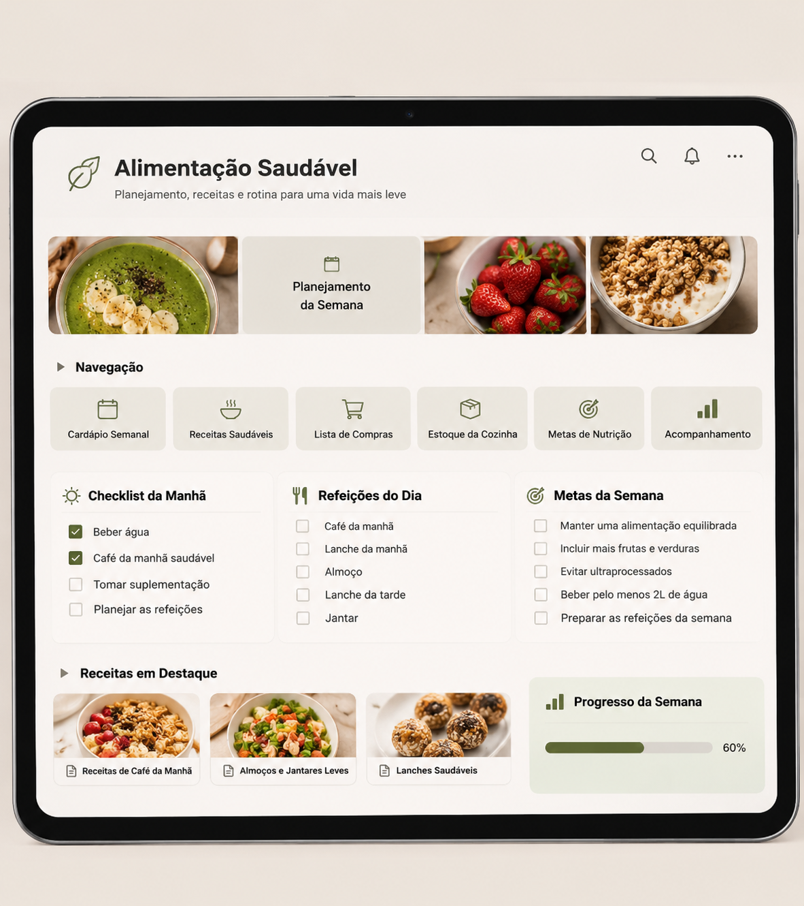
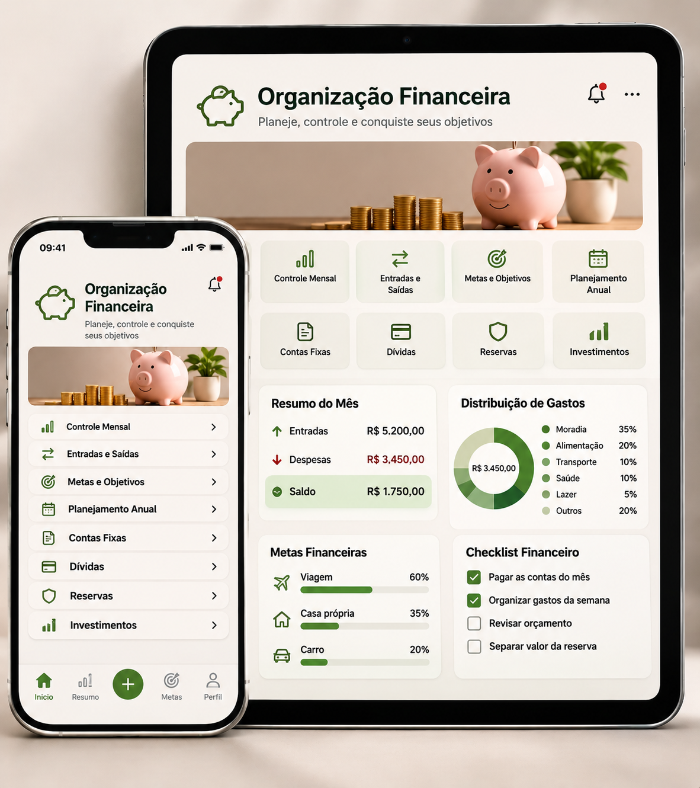

Alter Ego / Vision Board
Visualize a mulher que você deseja se tornar e a vida que sonha viver.
AUTOCUIDADO • MOVIMENTO • EQUILÍBRIO
Conheça o Vision Planner, o planner inteligente que organiza sua rotina, conecta seus sonhos aos seus hábitos e te mostra o que fazer todos os dias para finalmente tirar suas metas do papel.

Inspirado nos princípios de O Poder do Subconsciente: identidade e visualização em um único sistema.
14.500 pessoas já adquiriram
Não culpe a disciplina quando o problema é que você ainda não decidiu quem quer ser. A forma como você se vê define como você age.
Vision Planner
Visualize a mulher que você deseja se tornar e a vida que sonha viver.

Transforme seus sonhos em objetivos claros e saiba aonde quer chegar.

Organize seus dias e construa hábitos que te aproximam dos seus objetivos.

Acompanhe sua evolução e veja cada pequeno passo se transformar em conquista.
Suas imagens e referências da vida que você quer construir.
A mulher que você quer ser, presente nas escolhas do dia.
Pequenos passos que transformam intenção em constância.

Sua rotina e seu progresso organizados em um só lugar.
Agora aplicadas em rotina, hábito e sistema, em um só lugar: o Vision Planner.
Abra a aba Hoje e veja suas prioridades sem precisar planejar tudo novamente.
Registre suas ações, use lembretes e acompanhe sua constância.
Organize seus objetivos e acompanhe cada etapa da sua evolução.
Veja estatísticas, histórico e conquistas para reconhecer o quanto já avançou.
Crie seu alter ego, monte seu vision board e pratique afirmação e visualização.
CONHEÇA O APLICATIVO
Toque nas abas e conheça os espaços da sua rotina.
Crie seus hábitos, defina uma meta diária e acompanhe o que já fez. Você escolhe entre cartões, últimos cinco dias e calendário mensal.
Telas reais, com exemplos de uso. Experimente os modos claro e escuro.
DEPOIMENTOS
14.500 pessoas já adquiriram o Vision Planner
BÔNUS EXCLUSIVOS
Recursos extras para apoiar sua rotina e colocar seus planos em prática, incluídos gratuitamente na oferta atual.
Uma afirmação para cada dia do ano, com temas de autoconfiança, disciplina e gratidão para incluir na sua rotina.

Organize sua alimentação, planeje as refeições da semana e monte sua lista de compras para facilitar o dia a dia.

Organize sua vida financeira: registre entradas e saídas, acompanhe seus gastos e planeje suas metas.
VALOR DO INVESTIMENTO
Seu investimento para começar
R$ 49,90
7 dias de garantia
Organize sua rotina e acompanhe suas ações.
Consulte seus registros e anotações.
Veja sua constância e seu progresso.
Reúna imagens, referências e seus sonhos.
Prévia da oferta — compra ainda indisponível.
Compra segura · 7 dias de garantia
PARA DECIDIR COM TRANQUILIDADE
Você tem 7 dias para conhecer o Vision Planner. Se não fizer sentido para você, solicite o reembolso integral dentro desse prazo.
SIMPLES, DO COMEÇO AO ACESSO
Confira o valor e as condições no checkout.
Após a confirmação do pagamento, as instruções chegam ao e-mail da compra. Confira também o spam.
Entre no Vision Planner, organize seus hábitos e reúna suas inspirações.
Um passo de cada vez.
Todos os dias, por você.
VAMOS CONVERSAR?
Um espaço de inspiração para criar hábitos de autocuidado, movimento e equilíbrio. A ideia é cuidar de você de um jeito leve e possível.
Não. Comece com práticas simples, respeitando seus limites. Para exercícios específicos, busque orientação profissional.
Escolha um pequeno ritual e reserve de 5 a 10 minutos. Adapte os horários à sua realidade e aumente aos poucos, se desejar.
Para nós, é também sobre como você se sente: descanso, autoestima, presença e uma relação mais gentil consigo mesma.
Um lembrete para levar com você